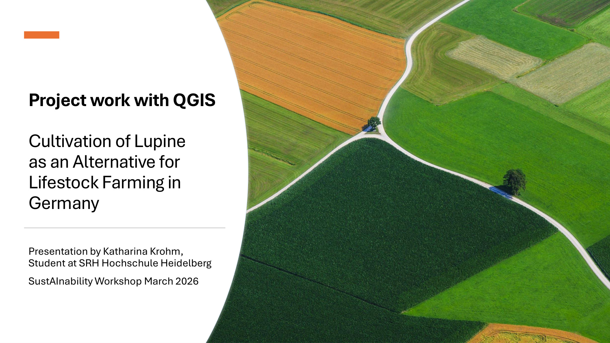
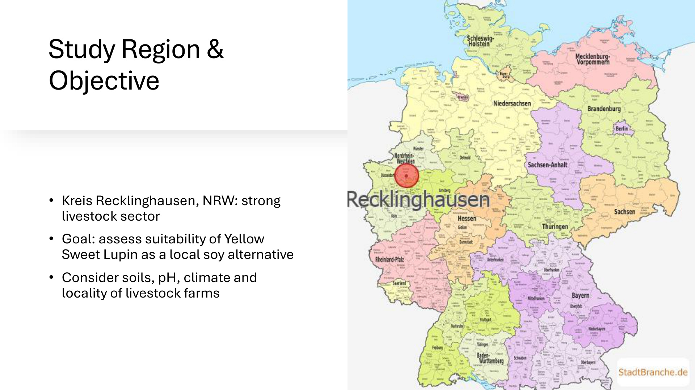
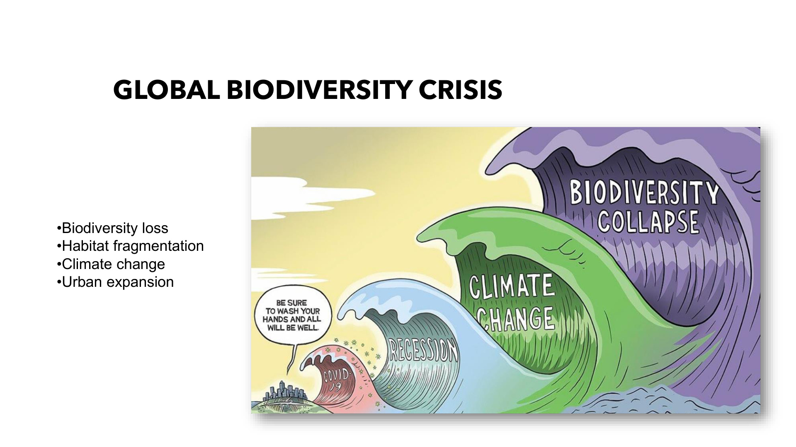
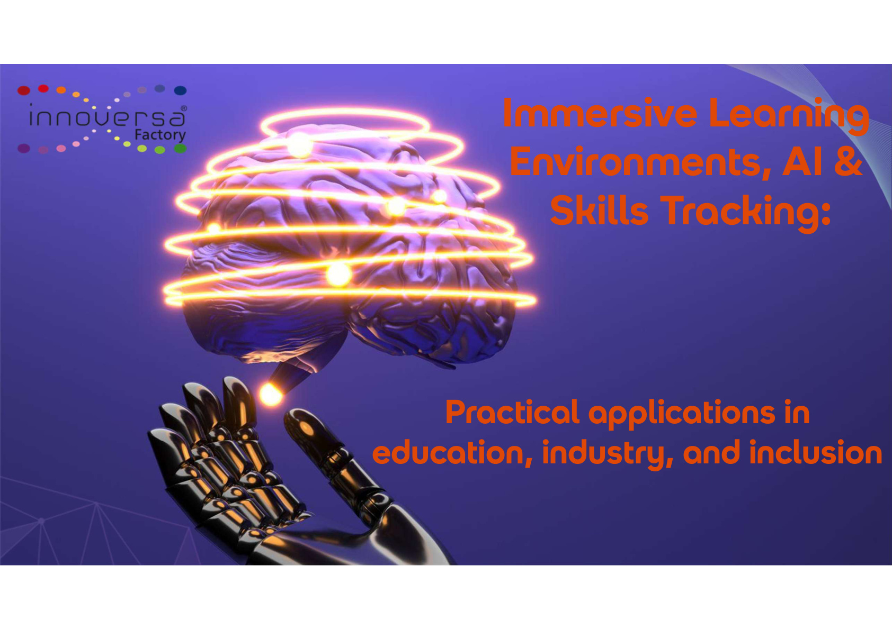
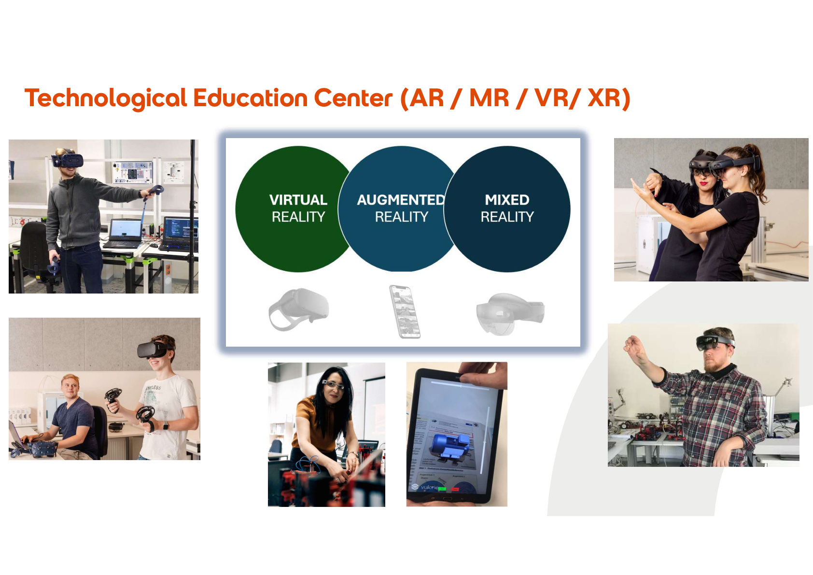
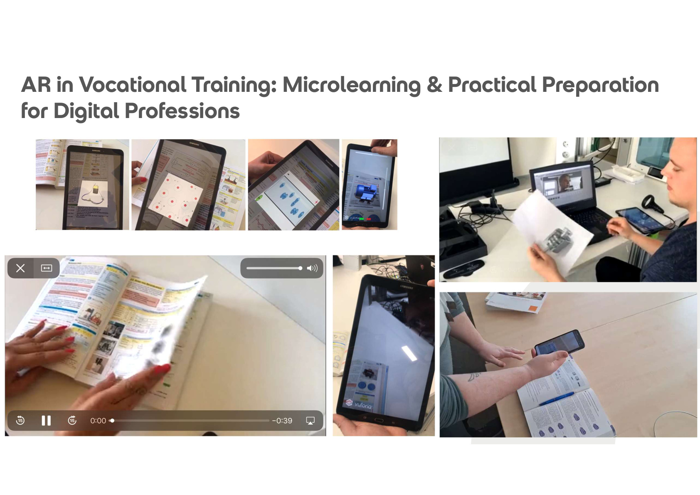
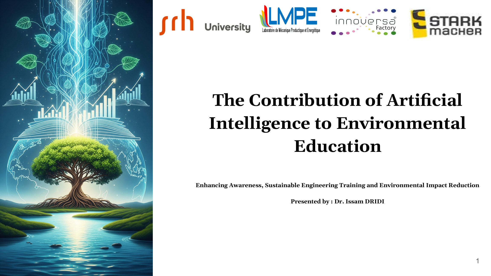
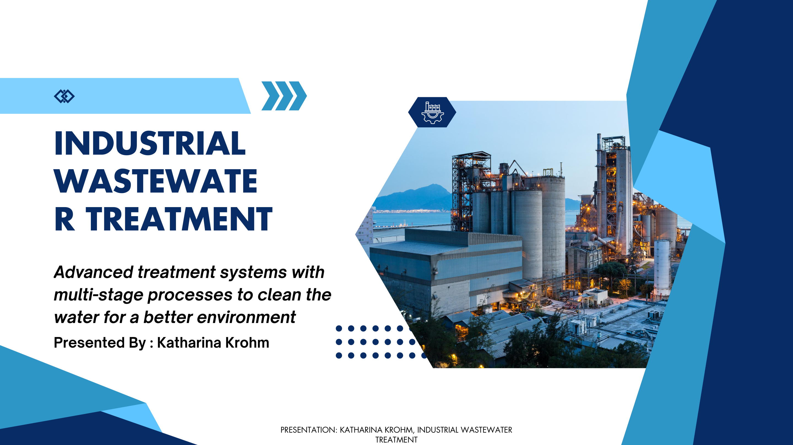
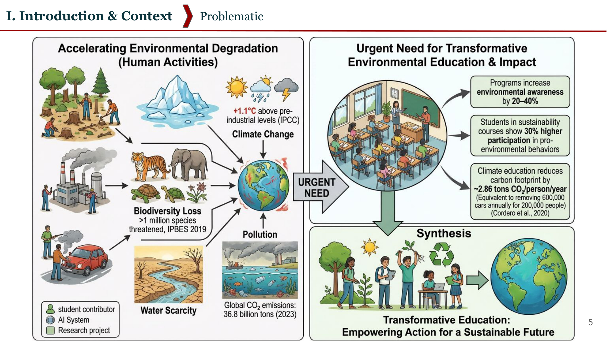

The second SustAInability Online Workshop brought together lecturers, researchers, and students from institutions across Europe, Central Asia, Southeast Asia, and North Africa to discuss how artificial intelligence, spatial analysis, environmental monitoring, education, and applied engineering can support sustainability. Over two days, the event made one point with consistent clarity: AI becomes most meaningful when it is connected to real problems, real data, and practical decision-making.
Opening and Project Introduction
The conference was organised by Gergana Kehayova, student assistant of the SustAInability project, who managed the full programme, coordinated speakers across multiple time zones, and kept both sessions running smoothly. Her organisational commitment was essential to the event and reflected a level of responsibility that went well beyond a supporting role.
Gergana also opened the academic programme with a concise and well-structured introduction to the project scope, the research direction, and the broader social relevance of the work. Her opening made clear that the initiative is not limited to technical outputs. It aims at practical impact, cross-institutional collaboration, and social benefit, and this framing shaped the discussions that followed throughout both days.
GIS and Sustainable Agriculture

Katharina Krohm (SRH University Heidelberg) presented a GIS-based spatial suitability analysis for the cultivation of yellow sweet lupine in the district of Recklinghausen. Her presentation showed how environmental and agricultural data layers, including soil pH, soil fertility, land use, interpolated temperature, and livestock density, can be combined within a structured geographic framework. By integrating these variables, she identified areas with stronger potential for cultivation. Locations such as Dorsten and Haltern am See stood out as particularly promising. The study illustrated how digital spatial tools can support more sustainable agricultural planning and how crop decisions can be improved through data-based environmental assessment.

AI-Assisted Forecasting for Land Use and Ecosystem Management

Prof. Fatih Sünbül introduced an AI-assisted forecasting framework connecting environmental planning, expert knowledge, machine learning, and IoT-supported monitoring. The central problem addressed was the growing pressure on ecosystems caused by urbanisation, tourism, agricultural expansion, infrastructure development, and climate change. The presentation explained how these pressures contribute to biodiversity loss and ecosystem degradation, and why conventional planning methods often remain too rigid or too abstract to respond adequately.
A defining feature of the study was its hybrid methodology. Environmental indicators representing ecosystem condition, human pressure, and vulnerability were combined with spatial data and field-based observations, and used in both expert-based zoning systems and machine-learning models. The results showed strong agreement between both approaches in core natural areas, while AI-based models offered greater sensitivity and finer detail in transitional zones and high-pressure landscapes. The presentation also demonstrated how IoT-based sensing can improve the quality and timeliness of environmental data, and how hybrid decision systems can reduce uncertainty in planning contexts.
Sovereign AI and Autonomous Systems
Dr. Imran Ullah Khan (Malaysia) presented on the theme of sovereign AI and applied intelligent systems for autonomous operation. He argued that AI systems should not only be used as external services rented from large technology providers, but should also be built, controlled, and adapted locally according to regional needs and capacities. The technical component focused on energy-aware routing for drone networks using a modified E-AntHocNet algorithm. The work addressed communication and task allocation in drone systems under energy constraints. The algorithm introduced an energy-stabilising threshold to improve routing decisions, conserve battery power, and increase network lifetime. Simulation results indicated improvements over several baseline approaches. Although technically focused, this contribution added an important perspective to the conference by showing how AI, optimisation, and networking can support resilient and autonomous systems in applied sustainability settings.
Augmented Reality and AI in Applied Contexts

Dr. Leila Mekacher, Head of Digital Research and Innovation at SRH University Heidelberg and founder of Innoversa Factory, delivered one of the most forward-looking sessions of the entire conference. Her presentation was not a forecast of what technology might one day offer — it was a live demonstration of what is already working, already deployed, and already changing how people learn.
Dr. Mekacher introduced the full spectrum of extended reality, covering Virtual Reality (VR), Augmented Reality (AR), and Mixed Reality (MR), and explained how each technology addresses a different relationship between the learner and the environment. VR places the user entirely inside a computer-generated world, enabling complex simulations, virtual training environments, and collaborative workspaces that eliminate distance. AR overlays digital information onto the physical world in real time, allowing machines, textbooks, and physical objects to become interactive. Mixed reality merges both, creating scenarios in which digital and physical elements coexist and interact simultaneously.

What made the session exceptional was the physical infrastructure behind it. The tec — Technological Education Center at SRH Heidelberg — operates a fully equipped lab with HTC VIVE Pro and Oculus Quest headsets for virtual environments, Microsoft HoloLens 2 and EPSON Moverio smart glasses for mixed reality applications, 3D printers, programmable micro:bit boards, LEGO Mindstorms robots, fischertechnik systems, and a complete industrial automation training setup. This is not a showcase facility. It is a working educational environment where students regularly build, test, and use these tools as part of their coursework.
The business case for extended reality was made clearly and with precision. AR technology eliminates the need for costly on-site expert visits by enabling remote assistance through shared visual fields. It allows companies to train employees step-by-step on complex systems without shutting down production. It creates digital twins of industrial processes, enabling simulation and optimisation before any physical changes are made. VR showrooms replace physical product catalogues and allow customer-facing teams to demonstrate anything, anywhere. The savings in travel, time, and training costs are substantial. The gains in flexibility and reach are even more so.

The most striking demonstration was the application of AR in vocational training. Dr. Mekacher showed how standard printed textbooks can be enhanced with AR overlays, turning a static page into an interactive learning environment the moment a tablet or smartphone is pointed at it. Students in technical and industrial training programmes can access video explanations, 3D component models, and live process demonstrations embedded directly into the materials they already use. The technology requires no additional hardware beyond a device most learners already own. The barrier to entry is low. The impact on comprehension and engagement is high.
AI plays a central and growing role across all of these applications. Skills tracking systems monitor learner progress through immersive environments and adapt content in real time. AI can identify where a student hesitates, which steps they repeat, and which concepts require reinforcement — and respond accordingly. Combined with the physical richness of XR environments, this creates a learning experience that is simultaneously more personalised, more measurable, and more effective than almost any traditional classroom format can offer.
Dr. Mekacher's session left a clear impression: the technology exists, it works, it is deployable at scale, and the only remaining questions are about how quickly institutions are willing to adopt it. For anyone present, the educational horizon suddenly looked very different.
AI in Environmental Education

Dr. Issam Dridi (Tunisia) addressed the role of AI in environmental education and framed three core challenges in the field. First, environmental systems are inherently complex because they connect climate, ecosystems, economics, and human behaviour. Second, practical educational activities in this area are often limited by cost, access to laboratories, fieldwork, or specialised equipment. Third, there is frequently a gap between knowing environmental concepts and being able to act on them in real life.
Dr. Dridi argued that AI can help address each of these challenges. He showed how AI can support classroom engagement through simulations, chatbots, adaptive tasks, gamification, and immersive environments. He also explained how AI can assist teachers with curriculum development, content creation, automated assessment, lesson planning, and personalised learning pathways. His case studies included AI-supported water quality assessment, renewable energy education projects, and AI-enabled environmental monitoring. He also acknowledged practical barriers such as limited budgets, teacher training needs, privacy concerns, and the risk of algorithmic bias. His talk made a strong case that AI should be understood not only as a technical tool, but also as an educational bridge between knowledge, action, and environmental responsibility.
Student Project Presentations
The second day shifted toward student-led project presentations under the "Students Meet Experts" format. This part of the conference demonstrated how students across partner institutions are already working with advanced digital tools and sustainability challenges in concrete and applied ways.
DiykanAI: Smart Greenhouse Monitoring in Mountain Regions
Saadat Orozova and Aifilia Zholdosheva presented DiykanAI, a smart greenhouse monitoring system designed for remote and climatically challenging environments. Their project addressed the specific conditions of mountainous regions, where sensor-based data collection and intelligent environmental control can support agricultural productivity and more stable greenhouse operation. The presentation connected AI principles directly to practical agricultural needs in high-altitude and resource-constrained settings.
Industrial Wastewater Treatment and AI-Based Process Control

Katharina Krohm gave a second presentation, this time on industrial wastewater treatment. She explained the challenge of industrial effluent streams with high concentrations of sulfates, acids, and heavy metals, and why conventional treatment methods are often insufficient. Her presentation described a treatment chain involving pre-treatment, electrodialysis, and crystallisation. Pre-treatment protects membranes from fouling caused by inorganic salts, suspended solids, and organic compounds. Electrodialysis uses an electric field to remove dissolved ions such as sulfate, producing a cleaned water stream and a concentrated stream. The concentrated stream can then be processed through crystallisation, allowing sulfates to be recovered based on solubility differences.
She addressed both the advantages and limitations of the combined process. The system can remove high sulfate loads efficiently, reduce waste, and convert pollutants into recoverable products such as sodium sulfate. At the same time, it requires substantial pre-treatment, consumes significant energy, and still faces membrane fouling challenges. The final part of her presentation connected the process to AI, showing how sensor networks and AI-based control systems could help adapt operating conditions to changing wastewater compositions in real time.
AI-Powered Bottle Sorting and Computer Vision
Dilnoza Baidulloeva and Asil Shonabiev presented an AI-powered bottle sorting system using computer vision. They introduced object detection concepts clearly and explained the use of the YOLO family of models, the structure of the model architecture, and the role of datasets, annotation, training, and evaluation. Their presentation highlighted how AI can support automated classification tasks directly relevant to recycling and circular economy systems. It was a solid example of how students can move from conceptual understanding into a practical implementation workflow, working with datasets, labels, training epochs, and real model outputs.
Marine Garbage Detection Using YOLOv11
Atiya Aliya and Laiba Ali presented a marine garbage detection system using YOLOv11. They framed ocean pollution as a persistent and often invisible ecological problem, noting that the challenge is not limited to surface plastic. Underwater environments introduce specific technical difficulties including poor visibility, refraction, variable lighting, turbidity, and a wide variety of object types. YOLOv11 was chosen for its speed, accuracy, and potential for deployment on edge devices such as NVIDIA Jetson, making it suitable for use with underwater drones or autonomous monitoring systems.
The presenters explained the full workflow from data collection and annotation using Roboflow through preprocessing, training, inference, and evaluation. Their reported performance metrics indicated a promising prototype. Their future development plans reflected a clear awareness of real deployment requirements: larger and more diverse datasets, real-time camera integration, geolocation mapping, improved robustness under difficult conditions, and public reporting tools. This was one of the most complete applied AI project presentations at the conference.
AI-Powered Solar and EV Planning for Khorog
Adolat Gharibshoeva and Fotima Abdulmainova presented a smart city decision-support system for solar panel deployment and public electric vehicle charging infrastructure in Khorog, a mountain city in Tajikistan. They explained the specific context: transport isolation, harsh climate, limited local infrastructure, and strong dependence on hydropower. Although the region receives approximately 2,232 sunshine hours per year, solar deployment remains limited, and no public EV charging network currently exists.
Their proposed framework combined solar site ranking, energy forecasting, charging optimisation, and predictive maintenance. It used open data sources including NASA POWER, digital elevation models, OpenStreetMap, and hazard data, together with methods such as multi-criteria decision analysis, random forest regression, LSTM neural networks, and isolation forest. Notably, the presenters addressed practical limitations openly: missing local operational data, mountain shadow effects, limited connectivity, and uncertain EV demand. Their responses were realistic and specific, including synthetic data strategies, 3D ray-casting models, lightweight offline-first solutions, and pilot deployment plans. The presentation also showed the broader impact of the framework, covering city planners, grid operators, maintenance teams, transport planners, donors, and capacity-building in local education.
Closing Keynote: AI and Ecosystem Restoration
Prof. Dr. Ruslan Isaev (Paragon International University, Phnom Penh) delivered one of the broadest and most integrative presentations of the conference. His talk, titled "Artificial Intelligence and the Environment: Data-Driven Solutions for Ecosystem Restoration, Resource Optimization, and Sustainable Energy," proposed a framework built around four pillars of AI environmental action: ecosystem restoration, resource optimisation, environmental monitoring, and sustainable energy.
Each pillar was illustrated through a concrete application. For ecosystem restoration, he described autonomous UAV-based aerial seeding in difficult terrain. For resource optimisation, he presented a framework designed to reduce household food waste using computer vision, large language model integration, and constrained optimisation. For environmental monitoring, he discussed a comparative analysis of PM2.5 and air quality index values across Kyrgyzstan and 31 other countries, using data from the World Bank, EDGAR, FAO, and sensor networks. For sustainable energy, he addressed machine-learning-based forecasting for national electricity consumption under hydro-dependent grid conditions.
A particularly significant part of his presentation addressed what he called the "cognitive gap": the argument that environmental systems are now too dynamic, complex, and data-dense for purely manual human management. His PM2.5 analysis showed how statistical correlation can reveal important environmental drivers, including the negative role of reduced tree coverage and the positive relation between human density and declining air quality. His energy forecasting section explained why hydro-dependent grids require more robust predictive models in the face of rapid electrification, seasonal variability, and non-linear demand patterns. His concluding "eco-algorithmic blueprint" connected all four pillars and argued that environmental preservation increasingly requires the integration of machine learning, computer vision, robotics, and data-driven decision systems.
Recurring Themes

Across both days, several shared themes became visible.
AI is most effective when grounded in real environmental problems. This was evident in agriculture, land-use planning, drone systems, education, marine waste detection, wastewater treatment, solar planning, and air quality analysis. No presentation treated AI as an end in itself. In every case, the technology was presented as a means of addressing a specific, concrete challenge.
Data quality and context matter as much as methodology. Multiple speakers emphasised that good models depend on good environmental data, proper annotation, realistic assumptions, and a clear understanding of local constraints. This was particularly visible in the student presentations, where awareness of data limitations was often as impressive as the technical work itself.
Hybrid approaches consistently outperformed single-method solutions. Expert knowledge, engineering understanding, domain experience, and AI methods were not treated as separate or competing. The most compelling contributions came from combining them.
Education remains central to long-term impact. Whether through AI-supported environmental teaching, student-led sustainability projects, or interdisciplinary exchange, the conference consistently returned to the idea that technology, however powerful, depends on people who understand how to use it responsibly and in context.
Conclusion
The conference succeeded in building a substantive dialogue between sustainability, engineering, data science, and education. It showed that environmental challenges cannot be solved by technology alone, while also demonstrating clearly that technology, when applied with care and contextual understanding, can become a meaningful part of the response. The event provided a valuable platform for student visibility, cross-institutional collaboration, and the concrete exchange of ideas across disciplines and regions.
The organisers, speakers, and participants all contributed to a productive and engaging event. The combination of conceptual discussions, technical methods, applied case studies, and educational perspectives gave the conference both academic depth and practical relevance.